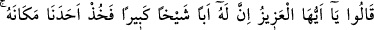
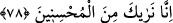
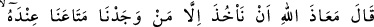
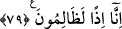

Rubil:
“Burada Yâkub’un tohumlarından bir tohum (çocuklarından bir çocuk) var!” dedi.
Yûsuf (a.s.):
“Yâkub da kim!” diye sordu.
Rubil bir kere daha öfkelendi. Bunun üzerine Yûsuf (a.s.) ona doğru kalktı. Ayağıyla
çelerek yakasından tuttuğu gibi yere düşürdü. Ona şöyle dedi:
“Siz İbrânîler topluluğu sizden daha güçlü kimse yok zannediyorsunuz.”
Cenâb-ı Hak yukarı ve aşağı yaratmıştır
Her elden üstün el yaratmıştır
Sa‘dî der ki:
Gerçi horoz cenkte neşeli olur
Ama tunç tırnaklı şahinin önünde ne yapabilir
Fare tutmakta kedi aslandır
Lâkin kaplanların savaşında kedi fare olur
78. Dediler ki: “Ey aziz! Gerçekten onun çok yaşlı bir babası var. Onun yerine
bizim birimizi alıkoy. Zira biz seni, iyilik edenlerden görüyoruz.”
Bünyamin’i kurtarmanın bir yolu olmadığını anlayan kardeşler, çaresiz boyunlarını
büküp kendilerine acındırarak “dediler ki: Ey aziz! Gerçekten onun” kendisinden ayrı
durmaya dayanamayacak “çok yaşlı bir babası var.” O, sevgili oğlu Yûsuf’un
helâkinden sonra bu oğluna ünsiyet ve ülfet etti. Dolayısıyla “onun yerine” ister rehin
olarak ister köle olarak “bizim birimizi alıkoy.” Çünkü babamız hiçbirimize bunun
kadar şefkat ve muhabbet beslemiyor. “Zira biz seni,” ölçüde ve misâfirperverlikte
bize “iyilik edenlerden görüyoruz.” Bu nimeti de bize bağışlayarak ihsânını tamamla!
79. Dedi ki: “Eşyamızı yanında bulduğumuz kimseden başkasını alıkoymaktan
Allah’a sığınırız. O takdirde biz gerçekten zâlimler oluruz!”
Yûsuf: “Dedi ki: “Eşyamızı yanında bulduğumuz kimseden” yâni su kabı yükünden